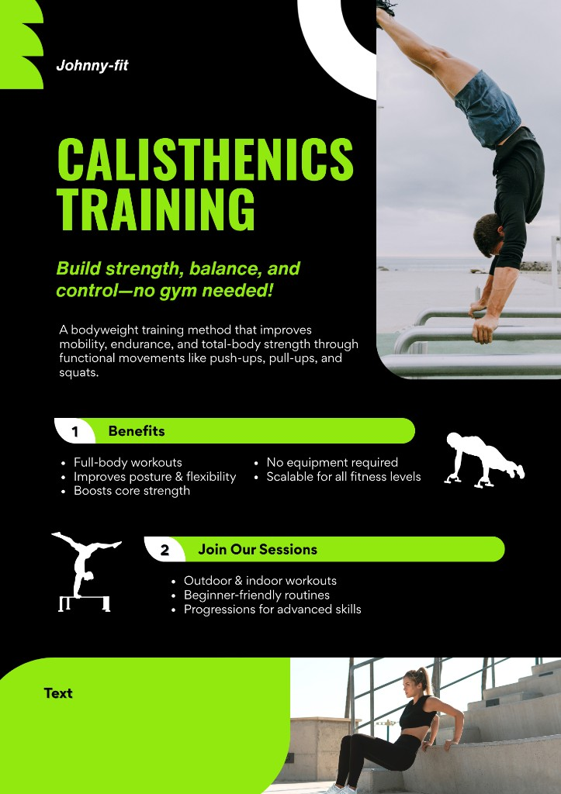

Johannes-Gymnasium Lahnstein · AG-Angebot
Die neue Calisthenics-AG am Johnny
Kraft, Beweglichkeit und Körperbeherrschung — nur mit dem eigenen Gewicht.
Schluss mit langweiligem Geräteturnen. Du lernst, deinen Körper zu beherrschen — stark, fit und beweglich, ganz ohne Fitnessstudio. Für alle Klassenstufen, jedes Level.

Wer
Klassen 5 bis MSS
Anfänger & Fortgeschrittene
Anfänger & Fortgeschrittene
Wann
Wochentag,
Uhrzeit Uhr
Wo
Schulhof / Turnhalle